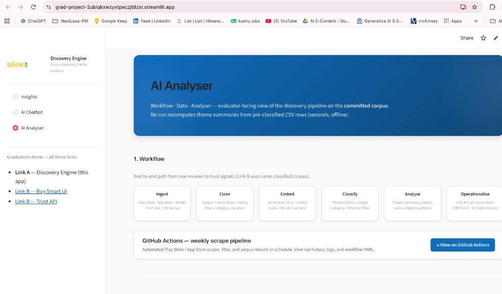
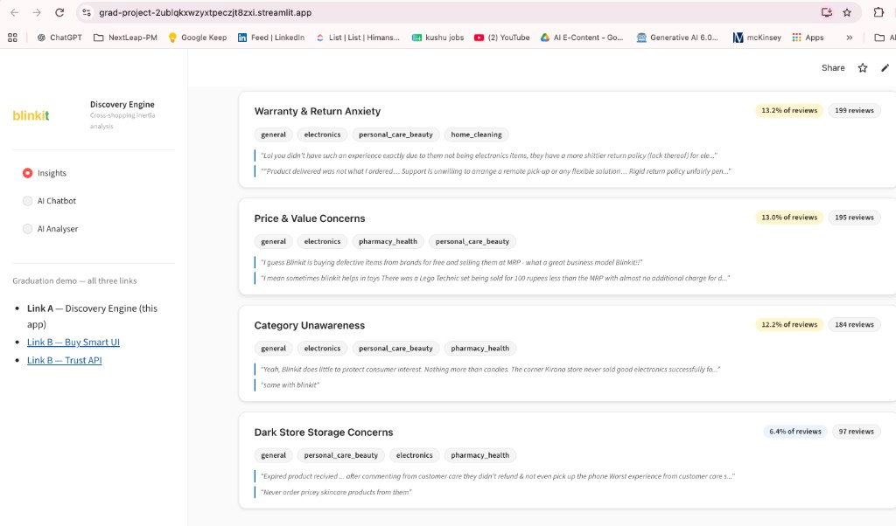
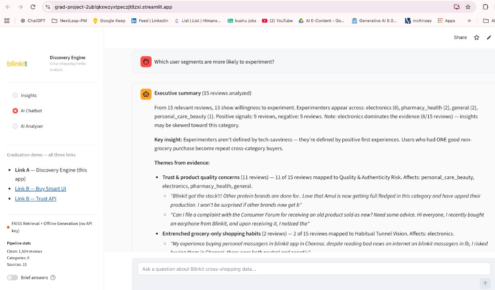

Step 1 · What we built
End-to-end review pipeline → committed corpus
1 Ingest
2 Clean
3 Embed
4 Classify
5 Analyse
6 Operationalise
29,478 raw reviews
Play Store · App Store · Reddit · YouTube
Friction filter
Dedup · noise removal · ≤4★ · non-grocery categories
Corpus A — 1,504 reviews
Complaint-focused by design · 8 categories · 12 theme labels
Step 2 · Insights from the analyser
What we derived
Public review analysis shows non-grocery friction is mostly pre-purchase downside — users worry about returns, fair value, and product condition before they buy.
The AI Analyser surfaces these as recurring complaint themes with representative quotes — a repeatable read on the committed corpus, not a one-off summary.
AI Analyser — workflow · data · output

Representative quote — Warranty theme
“…electronics etc. — ordered after careful consideration because there is no refund. Once bought, not returned or cancelled.”
1,504
Reviews
8
Categories
12
Themes
15
Sources
Step 3 · Evidence in the app
Top 4 themes — count + meaning
Each label is what the classifier assigned; one-line gloss in plain English.
Warranty & Return Anxiety Returns
199 · 13%
Reviews cite no refund, denied exchange, non-returnable electronics.
Price & Value Concerns Value
195 · 13%
Overpriced vs market, bad value at MRP, compare-before-buying — value gap, not fake-goods fear.
Category Unawareness Visibility
184 · 12%
Didn’t know non-grocery categories exist in the app.
Dark Store Storage Concerns Condition
97 · 6%
Expired, heat-damaged, or poorly stored products at delivery.
Insights — theme cards + quotes

AI Chatbot — evaluator Q&A
